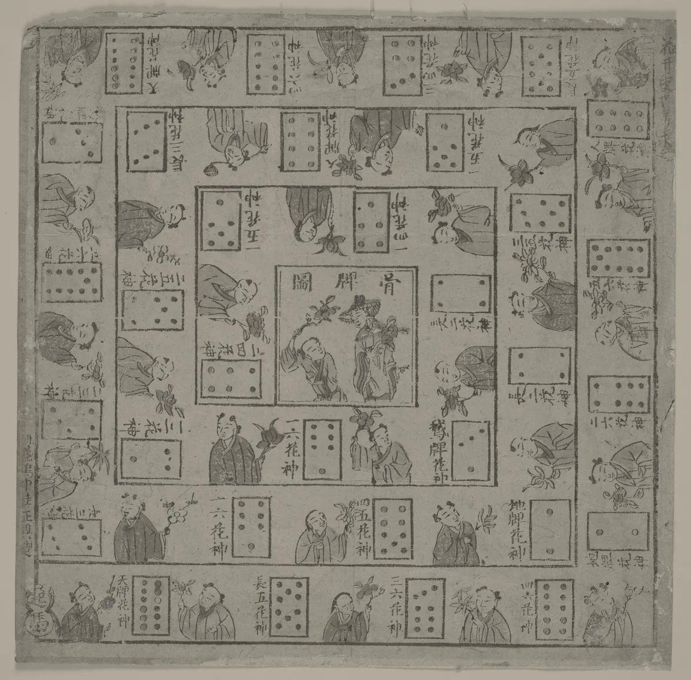

· Edición 83 · 4 min de lectura
Un barco de Kublai Kan hundido en 1281 guardaba dados y fichas

Un barco de Kublai Kan hundido en 1281 guardaba dados y fichas
Ver todo el tema, de principio a fin →
En pocas palabras. En 1281, un tifón hundió buena parte de la flota con la que Kublai Kan, el emperador mongol de China, intentó llegar a Japón. En octubre, los arqueólogos que excavan uno de esos barcos encontraron cinco dados y 29 fichas de un juego chino, las primeras piezas de juego en el sitio. Cuentan algo que las crónicas no anotaron: cómo pasaba el rato la gente a bordo.
El dato curioso. En 1974 apareció en la costa de Takashima un sello de bronce de unos 4,5 centímetros de lado que, según la revista Archaeology, terminó en la caja de herramientas de un pescador. Está escrito en chino y en phags-pa, un alfabeto que Kublai Kan encargó a un lama tibetano para sus sellos y documentos oficiales. Al respaldo lleva el rango de su dueño, un mando intermedio, y una fecha: 1277, cuatro años antes del tifón.
¿Qué hace un dado en el fondo del mar? Frente a Takashima, una isla del suroeste de Japón, un equipo de la ciudad de Matsuura y de la Universidad Kokugakuin excavó en octubre el tercer barco de esa flota hallado en la zona. Dejaron al descubierto unos 15 metros de la popa, la parte de atrás del casco.
Allí aparecieron cinco dados de cerca de un centímetro, del tamaño de una uña, y 29 fichas de 3 centímetros de largo por 1,5 de ancho: algo más pequeñas que una ficha de dominó. Del sitio ya habían salido unos 4.000 objetos. Ninguno, hasta ahora, para jugar.
¿De dónde venía ese barco? Kublai Kan, nieto de Gengis Kan y emperador de China, mandó en 1281 su segunda flota contra Japón; la primera, en 1274, también había fracasado. Las crónicas hablan de unos 4.400 barcos. Un tifón hundió buena parte en la bahía de Imari, y en Japón ese viento quedó en la memoria como kamikaze, «viento divino».
Durante siglos, de la flota quedaron relatos y lo que sacaban las redes de los pescadores. En 2011, tras años de rastrear el fondo con sonar, el equipo del arqueólogo Yoshifumi Ikeda confirmó el primer casco. Vino otro en 2015 y este tercero, confirmado en 2024: el más grande, de unos 30 metros. De 4.400 barcos, van tres; la arqueología submarina no tiene afán.
¿Quién jugaba? Aquí está el giro. Las fichas se parecen a las del tianjiu, un juego chino de fichas con puntos, primo del dominó. Y muy cerca aparecieron cuencos, morteros de cerámica, un hierro que parece un cuchillo y muchas espinas de pescado.
Ikeda, hoy en la Universidad Kokugakuin, cree que allí había una cocina o una despensa, y que quienes trabajaban en ella jugaban en los ratos libres. Según el diario Nagasaki Shimbun, se piensa que eran chinos encargados de cocinar.
No sería raro: la flota era mongola, pero sus barcos no. El arqueólogo Randall Sasaki rastreó la madera de Takashima hasta Corea, el valle del río Yangtsé y la provincia de Fujian, en China. Un imperio de jinetes, navegando en barcos ajenos.
Entonces, ¿qué hacía la gente a bordo? Lo que hace cualquiera que espera lejos de su casa: trabajar, comer y pasar el rato. Las crónicas guardaron el número de barcos y el nombre del viento. Los dados guardaron lo otro: que entre un turno de cocina y el siguiente, alguien se jugaba algo.
Siete siglos y medio después, en ese mismo barco bucean juntos especialistas de Japón, Corea del Sur y Mongolia. La próxima temporada de excavación está prevista para 2027, según la revista Archaeology.
Pero ojo.
- Una hipótesis, no un hecho. Que jugaran los cocineros es una deducción por lo que apareció al lado. Tampoco se ha informado de qué material son las fichas.
- «Antepasado del mahjong», con calma. Así las presentó el equipo. Pero el mahjong de hoy surgió en China en el siglo XIX, a partir del madiao y de otros juegos de fichas, según la historiadora Maggie Greene. Hay parentesco, no una línea directa.
- Cifras de crónica. Los 4.400 barcos salen de los relatos de la época, no de un conteo en el fondo.
Para conversar
La pregunta. Si dentro de 700 años alguien encontrara lo que usted lleva hoy en los bolsillos, ¿qué creería que hacía para pasar el rato?
Para leer más
Libros para seguir con el tema
The Origins of the Lost Fleet of the Mongol Empire, de Randall J. Sasaki (Texas A&M University Press, 2015). El estudio, tabla por tabla, de la madera hundida en Takashima, para saber de dónde salieron los barcos. Solo está en inglés.
Genghis Khan y el inicio del mundo moderno, de Jack Weatherford (Crítica, 2007; traducción de Juan Rabasseda-Gascón). La historia del imperio que fundó el abuelo de Kublai Kan, contada para todo público. Algunos historiadores le reprochan que lo pinta demasiado amable.
¿Le interesa ver las fuentes?
Todos los documentos y datos que usamos
15 fuentes: 5 académicas, 7 de prensa, 3 de referencia.
- Prensa Nagasaki Shimbun (29 de octubre de 2026). 元寇船員の娯楽道具か？ サイコロや骨牌を発見 長崎県松浦・鷹島海底遺跡発掘 (¿Pasatiempos de los marinos de la flota? Hallan dados y fichas en el sitio submarino de Takashima)
- Prensa Mainichi Shimbun, vía Infoseek (28 de octubre de 2026). 元寇沈没船からサイコロ、マージャン牌起源の札 弘安の役戦場で (Dados y fichas en un barco hundido de la flota de 1281)
- Prensa Archaeology, revista del Archaeological Institute of America (6 de noviembre de 2026). Playing Cards Found in Mongol Invasion Shipwreck Off Japan
- Prensa Fukuoka Now (noviembre de 2026). Mongol-invasion wreck reveals gaming pieces and ship's scale
- Académica Yoshifumi Ikeda, Universidad de los Ryukyus, ensayo para la Sociedad Japonesa para la Promoción de la Ciencia (JSPS, junio de 2013). Grants-in-aid and Underwater Archaeological Research on the Mongol Invasions of Japan (Genko)
- Académica KAKEN, base de proyectos de investigación de Japón: proyecto 23222002 (2011-2016), informe final. Shipwrecks of the Mongol invasions studied with underwater archaeological methods: final research report
- Académica Randall J. Sasaki, Texas A&M University Press (2015), en Project MUSE. The Origins of the Lost Fleet of the Mongol Empire
- Académica USC US-China Institute, reseña del libro de Sasaki. Review: The Origins of the Lost Fleet of the Mongol Empire
- Académica Maggie Greene, Cross-Currents: East Asian History and Culture Review (diciembre de 2015), en eScholarship. The Game People Played: Mahjong in Modern Chinese Society and Culture
- Referencia archaeology.jp, guía de sitios arqueológicos de Japón. Takashima underwater site (sello de bronce en escritura phags-pa)
- Prensa Archaeology (enero-febrero de 2003). Relics of the Kamikaze
- Prensa Nippon.com. Ships on the Seabed: Searching for the Mongol Empire's Lost Invasion Fleet
- Prensa The Japan Times (19 de febrero de 2012). Mongol shipwreck to be first historical seabed site
- Referencia Cleveland Museum of Art. Dominoes (骨牌圖), China, dinastía Qing, 1736-1795, ficha de la obra
- Referencia Lecturalia (ficha del autor y de la edición en español). Jack Weatherford: Genghis Khan y el inicio del mundo moderno (Crítica, 2007; traducción de Juan Rabasseda-Gascón)
Glosario
Las palabras técnicas, explicadas
- Popa: la parte de atrás de un barco.
- Sonar: un aparato que manda sonidos al agua y, con los ecos, dibuja el fondo.
- Sitio histórico submarino: en 2012, el fondo de Takashima fue el primer lugar bajo el agua protegido como sitio histórico nacional en Japón.
- Tianjiu: un juego chino con fichas de puntos, parecidas a las del dominó.
- Phags-pa: el alfabeto que Kublai Kan mandó crear y que se usaba en sus sellos y documentos oficiales.
- Tifón: el nombre que se da en el Pacífico occidental a un huracán.
Nota metodológica
Cómo se hizo esta edición y qué no pudimos verificar
Por qué esta historia. Miramos seis candidatas de las últimas semanas: los dados de Takashima; el mayor tesoro vikingo de Noruega, con más de 5.500 monedas y un penique rarísimo del rey Olaf Haraldsson; un agricultor de Parma, en Italia, que sembró unas semillas olvidadas en su ático y recuperó un trigo antiguo (Smithsonian); unas ballenas azules que dejaron de migrar en Nueva Zelanda y unos navegantes del Pacífico que se orientan como sus antepasados (las dos, de National Geographic); y un barco hundido en 1944 frente a Nueva Inglaterra, hallado tras siete años de búsqueda. Elegimos los dados porque cualquiera entiende la escena, porque cambia de territorio respecto a la historia de ayer (los jaguares, naturaleza y ciencia) y porque el anuncio viene de quienes excavan, con detalles concretos. El tesoro vikingo es sobre todo una cifra; el trigo pasa por una sola revista y ocurrió hace treinta años; las ballenas repetían la naturaleza; los navegantes no tienen un hecho reciente; y el barco de 1944 es una historia de guerra con muertos.
Qué verificamos y qué no. No pudimos abrir los artículos ni los documentos completos: trabajamos con los resultados de búsqueda, que reproducen partes de ellos, en japonés y en inglés. Las medidas de las fichas, los 4.000 objetos, la cocina y la idea de los cocineros chinos vienen del Nagasaki Shimbun; la fecha del anuncio, del Mainichi y de Archaeology; la participación de Corea del Sur y Mongolia, del Nagasaki Shimbun, según el resumen que encontramos. Que la próxima excavación sea en 2027 solo lo leímos en Fukuoka Now. La historia del sitio sale del ensayo de Ikeda para la JSPS, del informe de su proyecto y de Nippon.com; el origen de la madera, del libro de Sasaki y de una reseña. Sobre el sello, las fuentes no coinciden en todo: archaeology.jp lo da por hallado en la costa en 1974, y Archaeology cuenta lo de la caja de herramientas. La cifra de 4.400 barcos es la de las crónicas, citada por Ikeda.
Imagen y libros. El grabado viene del Cleveland Museum of Art, que lo tiene en dominio público. Lo elegimos porque su título usa los mismos caracteres que koppai; es unos cinco siglos posterior al naufragio. No pudimos consultar el catálogo de Santo & Seña, así que los libros van sin enlace. Los datos del libro de Sasaki salen de su ficha en Project MUSE; los del de Weatherford, de Lecturalia.